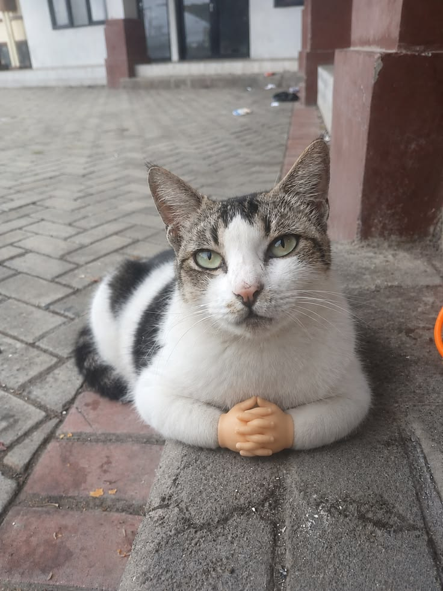
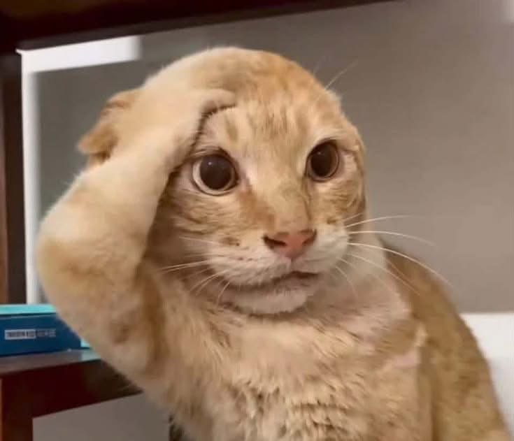
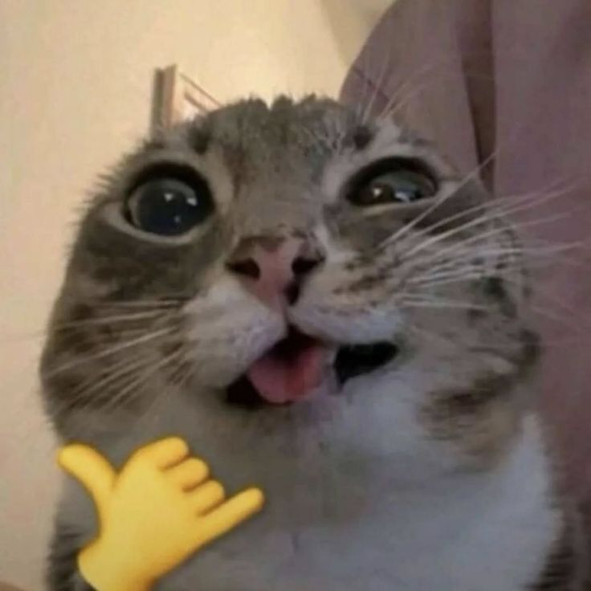
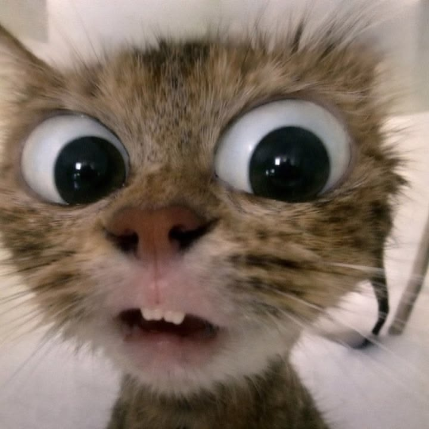
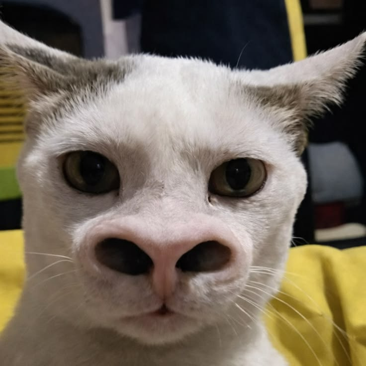
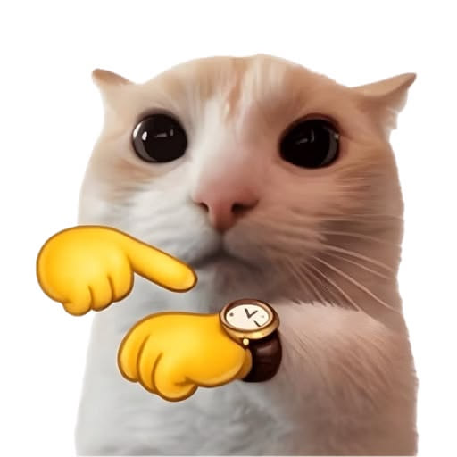
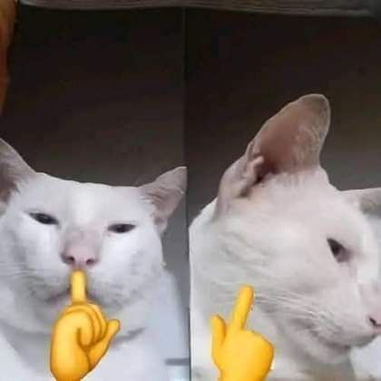
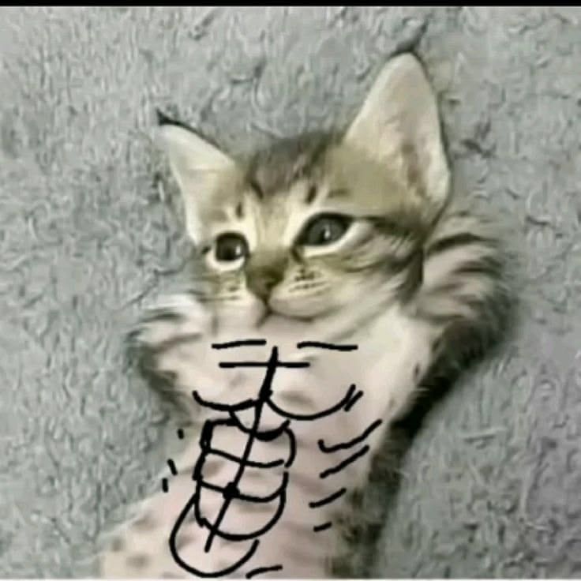

A little historyDari teman pemburu
✿Dari teman pemburu
jadi teman rumah.
Hubungan manusia dan kucing telah terjalin selama ribuan tahun.
Read their story ↗Masuk ke dunia kecil yang penuh cerita, tingkah menggemaskan, dan fakta seru tentang teman berbulu kita.



Kucing punya sejarah panjang, kebiasaan unik, dan cara sendiri untuk menunjukkan rasa nyaman. Yuk, kenali mereka lebih dekat!

Hubungan manusia dan kucing telah terjalin selama ribuan tahun.
Read their story ↗
Dari ekor tegak sampai kedipan pelan, setiap gerak bisa punya arti.
Decode the meow ↗
Rutinitas yang nyaman membantu kucing merasa aman dan sehat.
Explore cat care ↗
Kucing domestik berasal dari nenek moyang kucing liar yang hidup di wilayah Timur Dekat. Saat manusia mulai bercocok tanam, kucing tertarik mendekati permukiman karena banyaknya hewan pengerat.
Tekan kartu untuk membaca arti beberapa bahasa tubuh kucing. Ingat, lihat juga situasi dan gerakan tubuh lainnya.
Ekor yang tegak dengan postur tubuh rileks sering menjadi tanda sapaan ramah atau rasa nyaman.
Galeri kecil penuh ekspresi. Kamu juga bisa menambahkan foto kucing sendiri langsung dari perangkat.





Pilih beberapa foto dari perangkatmu. Foto akan tampil di galeri ini selama halaman masih terbuka.
Beberapa fakta menarik yang bikin dunia kucing makin seru.
Hal sederhana yang bisa membantu kucing merasa nyaman. Centang satu per satu untuk melihat progres checklist.
 A HAPPY CAT
A HAPPY CAT